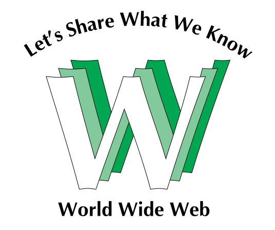

Historia y evolución de la World Wide Web
Autor: Catedra Tecnologia y gestion Web UTN frlp
categoria: Historia de la tecnología
Origen de la Web
El origen de la web se remonta a marzo de 1989, cuando Tim Berners-Lee, trabajando en el CERN (Laboratorio Europeo de Física de Partículas) en Ginebra, le presentó a su jefe Mike Sendall una propuesta para un sistema de manejo de información. Sendall respondió con la frase "Vague, but exciting" (vago pero emocionante), permitiendo a Berners-Lee continuar. En diciembre de 1990, con ayuda de Robert Cailliau, Berners-Lee logró la primera comunicación entre un cliente de hipertexto y un servidor a través de internet, dando origen a la primera versión del protocolo HTTP (HTTP 0.9), que incluía solo el método GET y cuya respuesta siempre era una página HTML. En 1992 aparece la primera definición de HTML, con menos de 15 tags. Ese mismo año, estudiantes de la Universidad de Kansas desarrollaron Lynx, un navegador de hipertexto para distribuir información interna del campus.
"Vague, but exciting" — Mike Sendall, comentario sobre la propuesta original de Tim Berners-Lee para la World Wide Web, 1989.

Web 1.0 (1994 — 1997)
La Web 1.0 se caracteriza por tres aspectos fundamentales: Sitios estáticos: El contenido se mantenía por largos períodos sin cambios. Las modificaciones eran realizadas por el desarrollador o webmaster a pedido del dueño del sitio. Sitios no interactivos: Los visitantes solo podían leer la información. Se los denominaba consumidores de contenido ya que no podían alterarlo. Aplicaciones propietarias: Las aplicaciones eran desarrolladas y vendidas por empresas, sin que los usuarios pudieran ver cómo funcionaban. El ejemplo más característico es el navegador Netscape, que dominaba el mercado con casi el 90% de uso.
Características técnicas de la Web 1.0:
- Uso de framesets — tags HTML para importar varias páginas en una sola, que cargaban de forma dispar
- Extensiones propietarias del HTML como <blink> y <marquee> que solo funcionaban en ciertos navegadores
- Contadores de visitas — una de las primeras características dinámicas de la web
- Botones GIF — imágenes animadas, una de las primeras mejoras visuales
Web 1.5 (1997 — 2003)
El cambio de la 1.0 a la 1.5 fue fundamentalmente tecnológico. La web comenzó a verse como un lugar posible para alojar aplicaciones. Las principales características incorporadas fueron: Páginas dinámicas: El contenido podía variar según factores como el idioma del navegador, la ubicación del usuario, etc. Lenguajes del lado del servidor: Aparecieron lenguajes como PHP, ASP y JSP que interactúan con los servidores web durante la petición del navegador para formar la respuesta. Sus primeras aplicaciones fueron el envío de formularios vía email y los guestbooks (libros de visitas). Lenguajes del lado del cliente: Evolución de lenguajes como JavaScript, VBScript y Flash que se ejecutan en el navegador una vez que el código llega al cliente. Lenguajes complementarios: XML (para intercambio de datos), XHTML (extensión de XML para reemplazar HTML) y CSS (hojas de estilo en cascada para separar contenido de presentación). Uso de bases de datos: Los lenguajes del lado del servidor permiten acceder a información almacenada en bases de datos, formando páginas con información dinámica.
Web 2.0 (2003 — actualidad)
El concepto de Web 2.0 surgió en una conferencia de las empresas O'Reilly y MediaLive International en 2003, donde Dale Dougherty lo presentó comparándolo con la Web 1.0. El cambio de la 1.5 a la 2.0 no fue tecnológico sino conceptual — cambió el modo en que los usuarios utilizan la web. El usuario pasa a ser prosumidor: productor y consumidor de contenido al mismo tiempo.
Los principios principales de la Web 2.0 son:
- La web como plataforma: Las aplicaciones se desarrollan sobre la web en lugar de como software de escritorio. Ejemplo: Google nunca fue vendido ni empaquetado, siempre fue un servicio web.
- Aprovechar la inteligencia colectiva: Se aprovecha la actividad de todos los usuarios para producir mejores resultados. Ejemplos: el PageRank de Google se basa en los links que otros sitios hacen, Amazon muestra reseñas de usuarios, eBay crece gracias a la actividad de compradores y vendedores.
- La gestión de la base de datos como competencia básica: Muchas páginas fueron reemplazadas por bases de datos. El valor real de las aplicaciones web está en sus datos — la base de datos de links de Google, la de productos de Amazon, la de música de Napster.
- El fin del ciclo de actualizaciones de versiones: En lugar de lanzar versiones completas de software, los sitios agregan y eliminan características continuamente según el uso de los usuarios.
- Software no limitado a un solo dispositivo: Las aplicaciones son accesibles desde múltiples dispositivos. Ejemplo: iTunes permite adquirir música desde la web y sincronizarla con dispositivos externos.
- Experiencias enriquecedoras del usuario (AJAX): Un conjunto de tecnologías existentes fue bautizado como AJAX, permitiendo aumentar la experiencia de los usuarios actualizando partes de la página sin recargarla completa.